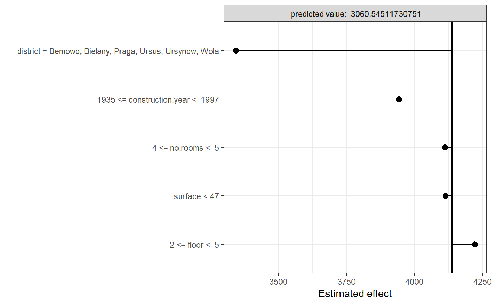

Introduction to localModel package
Mateusz Staniak
Source:vignettes/regression_example.Rmd
regression_example.RmdThis vignette shows how localModel package can be used to explain regression models. We will use the apartments dataset from DALEX package. For more information about the dataset, please refer to the Gentle introduction to DALEX.
We will use localModel and DALEX packages, random forest from randomForest package will serve as an example model.
library(DALEX)
library(localModel)
library(randomForest)
data('apartments')
data('apartmentsTest')
mrf <- randomForest(m2.price ~., data = apartments, ntree = 50)First, we need to create an explainer object, using the explain function. We will explain the prediction for fifth observation in the test dataset.
explainer <- DALEX::explain(model = mrf,
data = apartmentsTest[, -1])
new_observation <- apartmentsTest[5, -1]
new_observation
#> construction.year surface floor no.rooms district
#> 1005 1978 102 4 4 BemowoLocal explanation is created via individual_surrogate_model function, which takes the explainer, observation of interest and number of new observations to simulate as argument. Optionally, we can set seed using the seed parameter for reproducibility.
model_lok <- individual_surrogate_model(explainer, new_observation,
size = 500, seed = 17)First, local interpretable features are created. Numerical features are discretized by using decision tree to model relationship between the feature and the corresponding Ceteris Paribus profile. Categorical features are also discretized by merging levels using the marginal relationship between the feature and the model response. Then, new dataset is simulated by switching a random number of interpretable inputs in the explained instance. This procedure mimics “graying out” areas (superpixels) in the original LIME method. LASSO regression model is fitted to the model response for these new observations, which makes the final explanations sparse and thus readable.
The explanation can be plotted using generic plot function. The plot shows interpretable features and weights associated with them, starting at the model intercept. Negative weights are associated with features that decrease the apartment price, while positive weights increase it.
plot(model_lok)
We can see that for this observation, the predicted price is negatively influeced mostly by the district and construction year.